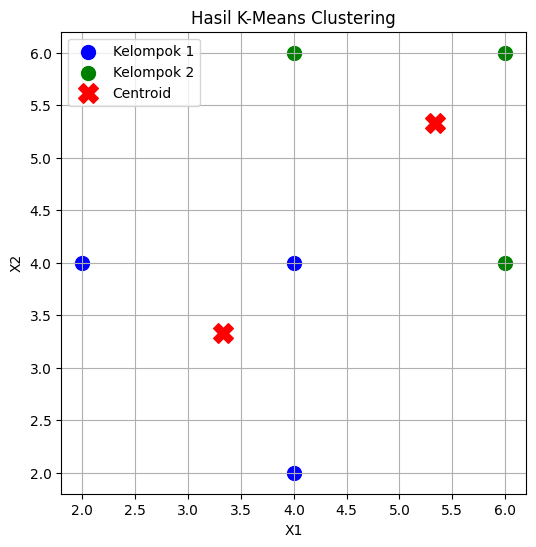

KMeans Clustering#
import pandas as pd, matplotlib.pyplot as plt
from sklearn.cluster import KMeans
data = {
'X1': [2, 4, 4, 4, 6, 6],
'X2': [4, 2, 4, 6, 4, 6]
}
df = pd.DataFrame(data)
kmeans = KMeans(n_clusters=2, random_state=42, n_init=10)
kmeans.fit(df)
KMeans(n_clusters=2, n_init=10, random_state=42)In a Jupyter environment, please rerun this cell to show the HTML representation or trust the notebook.
On GitHub, the HTML representation is unable to render, please try loading this page with nbviewer.org.
Parameters
| n_clusters | 2 | |
| init | 'k-means++' | |
| n_init | 10 | |
| max_iter | 300 | |
| tol | 0.0001 | |
| verbose | 0 | |
| random_state | 42 | |
| copy_x | True | |
| algorithm | 'lloyd' |
1. kmeans = KMeans(...) (Tahap Konfigurasi)
Ini adalah langkah menyiapkan “alat” atau modelnya, tapi belum dijalankan:
n_clusters=2: Kita memerintahkan algoritma untuk membagi data menjadi 2 kelompok.random_state=42: Ini adalah “kunci” pengacak. Fungsinya agar setiap kali kode ini dijalankan, hasilnya tetap sama/konsisten.n_init=10: Algoritma akan mencoba melakukan pengelompokan sebanyak 10 kali dengan posisi awal yang berbeda, lalu mengambil hasil yang paling bagus (paling rapi).
2. kmeans.fit(df) (Tahap Eksekusi)
Ini adalah perintah “Kerjakan!”.
Fungsi
.fit()menyuruh komputer untuk mempelajari data (df), menghitung jarak, dan melakukan pengelompokan sesuai konfigurasi di atas.
labels = kmeans.labels_
centroids = kmeans.cluster_centers_
df['Cluster'] = labels + 1
print("Posisi Centroid Akhir:")
print(centroids)
Posisi Centroid Akhir:
[[3.33333333 3.33333333]
[5.33333333 5.33333333]]
print("Hasil Pengelompokan:")
display(df)
Hasil Pengelompokan:
| X1 | X2 | Cluster | |
|---|---|---|---|
| 0 | 2 | 4 | 1 |
| 1 | 4 | 2 | 1 |
| 2 | 4 | 4 | 1 |
| 3 | 4 | 6 | 2 |
| 4 | 6 | 4 | 2 |
| 5 | 6 | 6 | 2 |
plt.figure(figsize=(6, 6))
colors = ['blue', 'green']
for i in range(2):
cluster_data = df[df['Cluster'] == (i + 1)]
plt.scatter(cluster_data['X1'], cluster_data['X2'],
c=colors[i], label=f'Kelompok {i+1}', s=100)
plt.scatter(centroids[:, 0], centroids[:, 1], c='red', marker='X', s=200, label='Centroid')
plt.title('Hasil K-Means Clustering')
plt.xlabel('X1')
plt.ylabel('X2')
plt.legend()
plt.grid(True)
plt.show()
